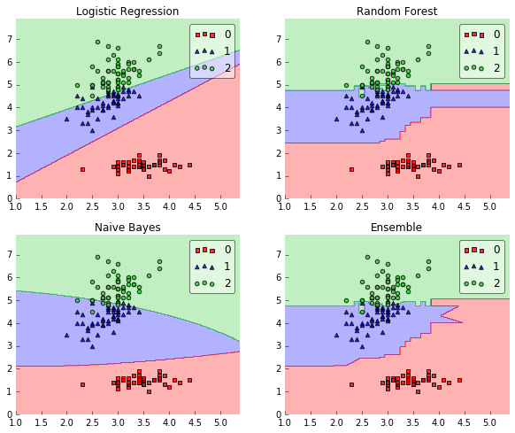

EnsembleVoteClassifier
Implementation of a majority voting EnsembleVoteClassifier for classification.
from mlxtend.classifier import EnsembleVoteClassifier
Overview
The EnsembleVoteClassifier is a meta-classifier for combining similar or conceptually different machine learning classifiers for classification via majority or plurality voting. (For simplicity, we will refer to both majority and plurality voting as majority voting.)

The EnsembleVoteClassifier implements "hard" and "soft" voting. In hard voting, we predict the final class label as the class label that has been predicted most frequently by the classification models. In soft voting, we predict the class labels by averaging the class-probabilities (only recommended if the classifiers are well-calibrated).

Note
If you are interested in using the EnsembleVoteClassifier, please note that it is now also available through scikit learn (>0.17) as VotingClassifier.
Majority Voting / Hard Voting
Hard voting is the simplest case of majority voting. Here, we predict the class label
Assuming that we combine three classifiers that classify a training sample as follows:
- classifier 1 -> class 0
- classifier 2 -> class 0
- classifier 3 -> class 1
Via majority vote, we would we would classify the sample as "class 0."
Weighted Majority Vote
In addition to the simple majority vote (hard voting) as described in the previous section, we can compute a weighted majority vote by associating a weight
where
Continuing with the example from the previous section
- classifier 1 -> class 0
- classifier 2 -> class 0
- classifier 3 -> class 1
assigning the weights {0.2, 0.2, 0.6} would yield a prediction
Soft Voting
In soft voting, we predict the class labels based on the predicted probabilities
where
Assuming the example in the previous section was a binary classification task with class labels
$C_1(\mathbf{x}) \rightarrow [0.9, 0.1]$ $C_2(\mathbf{x}) \rightarrow [0.8, 0.2]$ $C_3(\mathbf{x}) \rightarrow [0.4, 0.6]$
Using uniform weights, we compute the average probabilities:
However, assigning the weights {0.1, 0.1, 0.8} would yield a prediction
References
- [1] S. Raschka. Python Machine Learning. Packt Publishing Ltd., 2015.
Examples
Example 1 - Classifying Iris Flowers Using Different Classification Models
from sklearn import datasets
iris = datasets.load_iris()
X, y = iris.data[:, 1:3], iris.target
from sklearn import cross_validation
from sklearn.linear_model import LogisticRegression
from sklearn.naive_bayes import GaussianNB
from sklearn.ensemble import RandomForestClassifier
import numpy as np
clf1 = LogisticRegression(random_state=1)
clf2 = RandomForestClassifier(random_state=1)
clf3 = GaussianNB()
print('5-fold cross validation:\n')
for clf, label in zip([clf1, clf2, clf3], ['Logistic Regression', 'Random Forest', 'Naive Bayes']):
scores = cross_validation.cross_val_score(clf, X, y, cv=5, scoring='accuracy')
print("Accuracy: %0.2f (+/- %0.2f) [%s]" % (scores.mean(), scores.std(), label))
5-fold cross validation:
Accuracy: 0.90 (+/- 0.05) [Logistic Regression]
Accuracy: 0.93 (+/- 0.05) [Random Forest]
Accuracy: 0.91 (+/- 0.04) [Naive Bayes]
from mlxtend.classifier import EnsembleVoteClassifier
eclf = EnsembleVoteClassifier(clfs=[clf1, clf2, clf3], weights=[1,1,1])
for clf, label in zip([clf1, clf2, clf3, eclf], ['Logistic Regression', 'Random Forest', 'Naive Bayes', 'Ensemble']):
scores = cross_validation.cross_val_score(clf, X, y, cv=5, scoring='accuracy')
print("Accuracy: %0.2f (+/- %0.2f) [%s]" % (scores.mean(), scores.std(), label))
Accuracy: 0.90 (+/- 0.05) [Logistic Regression]
Accuracy: 0.93 (+/- 0.05) [Random Forest]
Accuracy: 0.91 (+/- 0.04) [Naive Bayes]
Accuracy: 0.95 (+/- 0.05) [Ensemble]
Plotting Decision Regions
import matplotlib.pyplot as plt
from mlxtend.evaluate import plot_decision_regions
import matplotlib.gridspec as gridspec
import itertools
gs = gridspec.GridSpec(2, 2)
fig = plt.figure(figsize=(10,8))
for clf, lab, grd in zip([clf1, clf2, clf3, eclf],
['Logistic Regression', 'Random Forest', 'Naive Bayes', 'Ensemble'],
itertools.product([0, 1], repeat=2)):
clf.fit(X, y)
ax = plt.subplot(gs[grd[0], grd[1]])
fig = plot_decision_regions(X=X, y=y, clf=clf)
plt.title(lab)

Example 2 - Grid Search
from sklearn import datasets
iris = datasets.load_iris()
X, y = iris.data[:, 1:3], iris.target
from sklearn.grid_search import GridSearchCV
from sklearn.linear_model import LogisticRegression
from sklearn.naive_bayes import GaussianNB
from sklearn.ensemble import RandomForestClassifier
from mlxtend.classifier import EnsembleVoteClassifier
clf1 = LogisticRegression(random_state=1)
clf2 = RandomForestClassifier(random_state=1)
clf3 = GaussianNB()
eclf = EnsembleVoteClassifier(clfs=[clf1, clf2, clf3], voting='soft')
params = {'logisticregression__C': [1.0, 100.0],
'randomforestclassifier__n_estimators': [20, 200],}
grid = GridSearchCV(estimator=eclf, param_grid=params, cv=5)
grid.fit(iris.data, iris.target)
for params, mean_score, scores in grid.grid_scores_:
print("%0.3f (+/-%0.03f) for %r"
% (mean_score, scores.std() / 2, params))
0.953 (+/-0.013) for {'logisticregression__C': 1.0, 'randomforestclassifier__n_estimators': 20}
0.960 (+/-0.012) for {'logisticregression__C': 1.0, 'randomforestclassifier__n_estimators': 200}
0.960 (+/-0.012) for {'logisticregression__C': 100.0, 'randomforestclassifier__n_estimators': 20}
0.953 (+/-0.017) for {'logisticregression__C': 100.0, 'randomforestclassifier__n_estimators': 200}
Note: If the EnsembleClassifier is initialized with multiple similar estimator objects, the estimator names are modified with consecutive integer indices, for example:
clf1 = LogisticRegression(random_state=1)
clf2 = RandomForestClassifier(random_state=1)
eclf = EnsembleVoteClassifier(clfs=[clf1, clf1, clf2], voting='soft')
params = {'logisticregression-1__C': [1.0, 100.0],
'logisticregression-2__C': [1.0, 100.0],
'randomforestclassifier__n_estimators': [20, 200],}
grid = GridSearchCV(estimator=eclf, param_grid=params, cv=5)
grid = grid.fit(iris.data, iris.target)
API
EnsembleVoteClassifier(clfs, voting='hard', weights=None, verbose=0)
Soft Voting/Majority Rule classifier for scikit-learn estimators.
Parameters
-
clfs: array-like, shape = [n_classifiers]A list of classifiers. Invoking the
fitmethod on theVotingClassifierwill fit clones of those original classifiers that will be stored in the class attributeself.clfs_. -
voting: str, {'hard', 'soft'} (default='hard')If 'hard', uses predicted class labels for majority rule voting. Else if 'soft', predicts the class label based on the argmax of the sums of the predicted probalities, which is recommended for an ensemble of well-calibrated classifiers.
-
weights: array-like, shape = [n_classifiers], optional (default=None)Sequence of weights (
floatorint) to weight the occurances of predicted class labels (hardvoting) or class probabilities before averaging (softvoting). Uses uniform weights ifNone. -
verbose: int, optional (default=0)Controls the verbosity of the building process. -
verbose=0(default): Prints nothing -verbose=1: Prints the number & name of the clf being fitted -verbose=2: Prints info about the parameters of the clf being fitted -verbose>2: Changesverboseparam of the underlying clf to self.verbose - 2
Attributes
-
classes_: array-like, shape = [n_predictions] -
clf: array-like, shape = [n_predictions]The unmodified input classifiers
-
clf_: array-like, shape = [n_predictions]Fitted clones of the input classifiers
Examples
>>> import numpy as np
>>> from sklearn.linear_model import LogisticRegression
>>> from sklearn.naive_bayes import GaussianNB
>>> from sklearn.ensemble import RandomForestClassifier
>>> from mlxtend.sklearn import EnsembleVoteClassifier
>>> clf1 = LogisticRegression(random_seed=1)
>>> clf2 = RandomForestClassifier(random_seed=1)
>>> clf3 = GaussianNB()
>>> X = np.array([[-1, -1], [-2, -1], [-3, -2], [1, 1], [2, 1], [3, 2]])
>>> y = np.array([1, 1, 1, 2, 2, 2])
>>> eclf1 = EnsembleVoteClassifier(clfs=[clf1, clf2, clf3],
... voting='hard', verbose=1)
>>> eclf1 = eclf1.fit(X, y)
>>> print(eclf1.predict(X))
[1 1 1 2 2 2]
>>> eclf2 = EnsembleVoteClassifier(clfs=[clf1, clf2, clf3], voting='soft')
>>> eclf2 = eclf2.fit(X, y)
>>> print(eclf2.predict(X))
[1 1 1 2 2 2]
>>> eclf3 = EnsembleVoteClassifier(clfs=[clf1, clf2, clf3],
... voting='soft', weights=[2,1,1])
>>> eclf3 = eclf3.fit(X, y)
>>> print(eclf3.predict(X))
[1 1 1 2 2 2]
>>>
Methods
fit(X, y)
Learn weight coefficients from training data for each classifier.
Parameters
-
X: {array-like, sparse matrix}, shape = [n_samples, n_features]Training vectors, where n_samples is the number of samples and n_features is the number of features.
-
y: array-like, shape = [n_samples]Target values.
Returns
self: object
fit_transform(X, y=None, fit_params)
Fit to data, then transform it.
Fits transformer to X and y with optional parameters fit_params
and returns a transformed version of X.
Parameters
-
X: numpy array of shape [n_samples, n_features]Training set.
-
y: numpy array of shape [n_samples]Target values.
Returns
-
X_new: numpy array of shape [n_samples, n_features_new]Transformed array.
get_params(deep=True)
Return estimator parameter names for GridSearch support.
predict(X)
Predict class labels for X.
Parameters
-
X: {array-like, sparse matrix}, shape = [n_samples, n_features]Training vectors, where n_samples is the number of samples and n_features is the number of features.
Returns
-
maj: array-like, shape = [n_samples]Predicted class labels.
predict_proba(X)
Predict class probabilities for X.
Parameters
-
X: {array-like, sparse matrix}, shape = [n_samples, n_features]Training vectors, where n_samples is the number of samples and n_features is the number of features.
Returns
-
avg: array-like, shape = [n_samples, n_classes]Weighted average probability for each class per sample.
score(X, y, sample_weight=None)
Returns the mean accuracy on the given test data and labels.
In multi-label classification, this is the subset accuracy
which is a harsh metric since you require for each sample that
each label set be correctly predicted.
Parameters
-
X: array-like, shape = (n_samples, n_features)Test samples.
-
y: array-like, shape = (n_samples) or (n_samples, n_outputs)True labels for X.
-
sample_weight: array-like, shape = [n_samples], optionalSample weights.
Returns
-
score: floatMean accuracy of self.predict(X) wrt. y.
set_params(params)
Set the parameters of this estimator.
The method works on simple estimators as well as on nested objects
(such as pipelines). The former have parameters of the form
``<component>__<parameter>`` so that it's possible to update each
component of a nested object.
Returns
self
transform(X)
Return class labels or probabilities for X for each estimator.
Parameters
-
X: {array-like, sparse matrix}, shape = [n_samples, n_features]Training vectors, where n_samples is the number of samples and n_features is the number of features.
Returns
-
Ifvoting='soft'`` : array-like = [n_classifiers, n_samples, n_classes]Class probabilties calculated by each classifier.
-
Ifvoting='hard'`` : array-like = [n_classifiers, n_samples]Class labels predicted by each classifier.